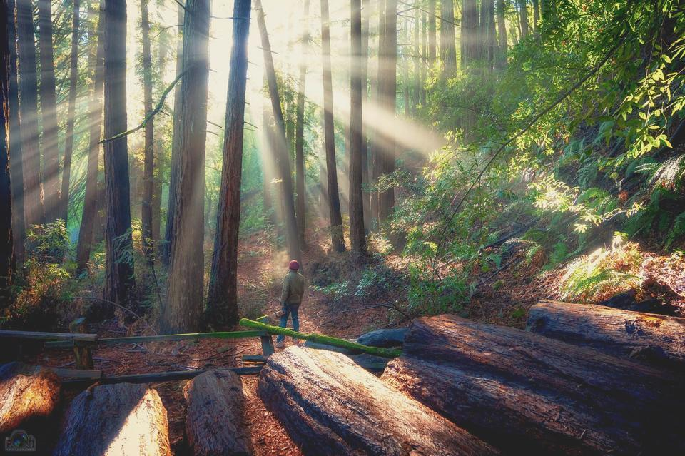
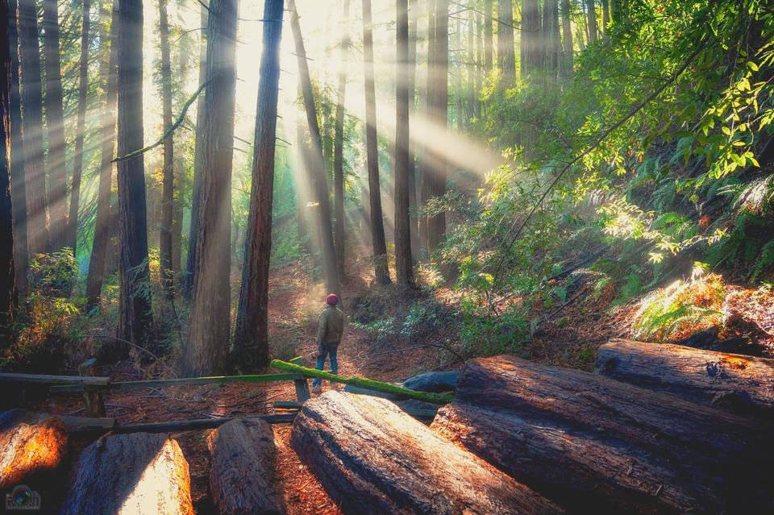

Basic
The panel you'll use on almost every photo: color or black and white, the starting look, white balance, brightness and contrast, and the presence sliders that add depth and color.
- Treatment: Color or Black & White (V).
- Profile: the starting look the sliders build on.
- White Balance: the WB menu, the eyedropper, Temp and Tint.
- Tone: brightness, contrast and the four range sliders, with Auto.
- A changed slider shows its change filled in blue from the small mark (the default) and its value in bold.
- Presence: Texture, Clarity, Dehaze, Vibrance and Saturation.
- The dot means this panel has edits. Click ↺ to reset just this panel. Basic is the one panel without an on/off switch.
Every slider works the same way. Drag the knob, or click the number on the right and type a value. Double-click the slider's name to reset it. Double-click a group heading (Tone, Presence) to reset the group. Click a panel's header to fold it away; right-click a header for Solo Mode, which keeps one panel open at a time.
Treatment: Color or Black & White
Switches the photo between color and black and white. In Black & White, the B&W Mix replaces HSL, so you can choose how bright each color becomes in gray. Press V to switch.
Profile
The look your photo starts from, under every slider. Only RAW files have a choice; for JPEG and HEIC the menu is dimmed.
- Camera Matching
- The default. Matches the preview your camera saved in the RAW file, including its Picture Control and Active D-Lighting, so the photo looks like it did on the camera's screen.
- Apple Neutral
- Apple's plain RAW render: flatter, with more room in the highlights. A good start for heavy edits.
White Balance
Makes whites white. Fix it first: every color after it depends on it.
The WB menu
- As Shot
- What the camera chose.
- Auto
- Atelier makes the photo's nearly gray colors neutral. Also Develop › Auto White Balance (⇧⌘U).
- Daylight, Cloudy, Shade, Tungsten, Fluorescent, Flash
- Lightroom's presets for that light (RAW files only).
- Custom
- Shown once you move Temp or Tint yourself.
White Balance Selector
- Click the eyedropper next to the WB menu, or press W. The pointer becomes an eyedropper.
- Click something in the photo that should be neutral gray or white: a cloud, a gray rock, a white shirt.
- Temp and Tint are set so that spot has no color cast, and the eyedropper goes away. Esc cancels.
Temp and Tint
Temp runs from blue to yellow and Tint from green to magenta; the colored tracks show which way is which. For RAW files Temp is in Kelvin (2,000 to 50,000 K). JPEG, HEIC and TIFF files have no real Kelvin, so Temp and Tint go from −100 to +100, with 0 as shot.
Shortcut. Shift-double-click the name Temp or Tint for Auto white balance.
Exposure
Overall brightness, in stops: +1.00 is twice as bright. On JPEG, HEIC and TIFF files the brightest tones roll off softly toward white instead of clipping.
Contrast
Moves bright tones up and dark tones down (or together, when negative). Each color keeps its hue: an orange gets brighter or darker but never turns red or yellow.
Highlights and Shadows
Recover a bright sky or open up dark areas without touching the rest. They work on whole areas, not single pixels, so a sky or a shadow moves together and its detail stays.
Whites and Blacks
Set the very brightest and darkest points. Whites up and Blacks down give a photo a full range from black to white; watch the histogram's clipping warnings, or hold ⌥ while dragging (see ⌥-drag views).
Auto
The Auto button next to the Tone heading sets Exposure, Highlights, Shadows, Whites and Blacks from the photo. Contrast is left alone. It's one history step (Auto Tone), so ⌘Z undoes it.
Just one slider. Shift-double-click a Tone slider's name to set only that slider automatically.
Texture and Clarity
Both add or soften local contrast, on brightness only, so colors don't shift. Negative values smooth without blurring edges.
- Texture
- Medium-sized detail: feathers, skin, bark, foliage. Positive brings it out; negative softens skin.
- Clarity
- Wider areas, mostly in the midtones: adds punch and depth. Negative gives a soft glow.
Dehaze
Removes haze, fog and mist (positive) or adds them (negative). It estimates how much haze lies over each area, so clear dark areas and the sky barely change.
Vibrance and Saturation
Saturation makes every color stronger by the same amount. Vibrance boosts muted colors most and leaves already strong ones alone, so it's gentler on skin and less likely to look garish. In Black & White neither has any effect.
 Before
Before
Vibrance +60
Saturation +60⌥-drag views: see what a slider does
Hold ⌥ while you press or drag these sliders. The photo is replaced by a view that shows exactly what the slider is changing, until you let go.
- Exposure, Highlights, Whites
- Black, with clipped highlights shown in the color of the channel that clips (white where all three clip). Drag until only what should be pure white shows.
- Shadows, Blacks
- White, with clipped shadows shown (black where all three clip).
Detail, Color Grading and Defringe have ⌥ views too; each slider's tooltip says what it shows.